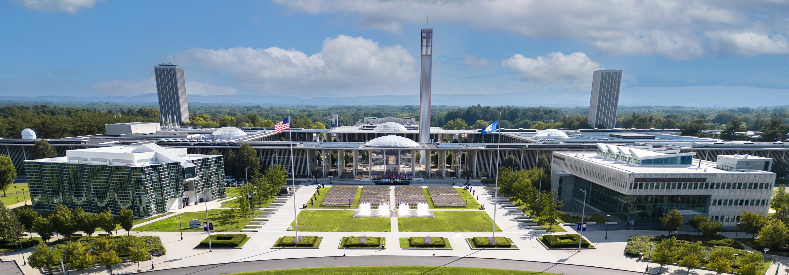

Fully Funded CS/ECE PhD Positions in Prof. Chong Liu's MLopt Lab at UAlbany (Fall 2027)

I’m recruiting two fully funded PhD students to join my Machine Learning and OPTimization Lab (MLopt Lab) at the State University of New York at Albany (UAlbany) starting Fall 2027! Students can join my lab through either the Computer Science (CS) PhD program or the Electrical and Computer Engineering (ECE) PhD program.
I am particularly interested in students who would like to work on AI for scientific discovery, including Bayesian optimization, sequential decision-making, drug discovery, lab-in-the-loop learning, and autonomous scientific experimentation. Strong applicants interested in my other research directions are also very welcome.
About me
I’m Chong Liu, an Assistant Professor of Computer Science with a courtesy appointment in Electrical and Computer Engineering at UAlbany. I received my PhD in Computer Science from the University of California, Santa Barbara in 2023 and spent one year as a Data Science Institute Postdoctoral Scholar at the University of Chicago.
My work has appeared in leading machine learning and AI venues such as ICML, ICLR, KDD, AISTATS, UAI, and JMLR, and has been recognized by the 2026 INFORMS QSR Best Student Paper Award (1st Place) and multiple oral presentations at AAAI and AAMAS. I serve as an Action Editor of TMLR and IEEE-TNNLS, and an Area Chair for ICML, NeurIPS, ICLR, AISTATS, and UAI. I am also a founding organizer of the AI for Drug Discovery and Development (AI4D3) workshop series since 2023.
My research interests are broadly in Machine Learning and AI for Science:
- AI for Drug Discovery: Drug design, Drug screening, Lab-in-the-loop learning, and Autonomous experimentation.
- Agentic AI Systems: Language model reasoning, Model collaborations, and Steering methods.
- Machine Learning Theory: Bayesian optimization, Bandit algorithms, and Quantum machine learning.
Recent PhD student achievements
My PhD student Zakaria Shams Siam has published three first-author papers:
My PhD student Jawad Hossain also leads work on efficient mathematical reasoning in language models, including HintMR: Eliciting Stronger Mathematical Reasoning in Small Language Models (preprint). See our lab page and publication list to learn more about our students and research. Feel free to email my students if you want to ask them any questions.
What will I provide as a PhD advisor?
- Fully funded PhD positions through the CS or ECE program.
- Comprehensive, patient, and responsible research training, with close and regular research mentorship.
- A friendly and collaborative study and research environment with access to a lot of computing resources.
- Opportunities to work on both fundamental machine learning problems and interdisciplinary applications in scientific discovery.
- Strong support for collaborations, conference travel, internships, research visits, award nominations, job hunting, and long-term career development.
- Opportunities to interact and collaborate with researchers across machine learning, medicine, drug discovery, engineering, and industry.
What do I expect from you?
- Be responsible and stay self-motivated. These qualities are essential for navigating the inherent uncertainty of research and making consistent progress toward becoming an independent researcher.
- Be curious and able to think in depth. Given a new idea or research problem that interests you, are you excited to dig into it, understand why it works, and identify what can be improved?
- Strong mathematical background, particularly in statistics, probability, linear algebra, calculus, and optimization, as well as project implementation skills with programming languages, modern ML/AI development tools, and large-scale computing systems.
- A bachelor’s degree (or higher) in CS, ECE, EE, EEE, Math, Statistics, or other related areas. Applicants from non-CS backgrounds may apply through the ECE PhD program.
- Prior research experience in machine learning, AI, optimization, computational biolog, or closely related areas is strongly preferred. Substantial undergraduate research or thesis projects are also valuable evidence of research potential.
- Publications are a plus, but are not required. I especially value evidence that you can take ownership of a research problem, develop ideas, conduct careful experiments or theoretical analysis, and communicate your results clearly.
Why UAlbany?
- Founded in 1967, UAlbany CS has a rich history with two Turing Award laureates (an alumnus and a former faculty member). The department has expanded substantially in recent years, especially in machine learning, artificial intelligence, natural language processing, and software engineering. Applicants can also pursue research in my lab through UAlbany ECE.
- AI research at UAlbany is growing rapidly. UAlbany’s AI Plus initiative has brought major investments in AI faculty, research, education, and computing infrastructure. The university now operates a large on-campus AI supercomputing system based on NVIDIA DGX systems, providing 192 A100 GPUs and more for modern machine learning research! In addition, our lab has recently received the SUNY AI Platform Reserach Award, providing ~$50k computing credits on Google Cloud!
- UAlbany is part of New York State’s Empire AI initiative and is actively involved in expanding access to advanced AI computing and research across SUNY and New York State.
- UAlbany and IBM established the Center for Emerging Artificial Intelligence Systems (CEAIS), a $20 million collaboration supporting joint AI research using advanced cloud computing and emerging IBM AI hardware. Our lab received a grant through this collaboration in 2026!
- UAlbany also has growing strengths in AI for science and biomedicine. The university has significant research programs in RNA science, biomedical research, atmospheric science, nanotechnology, and semiconductors, creating many opportunities for interdisciplinary AI research. Recent investments in UAlbany’s RNA and life-sciences research further strengthen opportunities at the intersection of AI and drug discovery.
- The Capital Region has a strong technology ecosystem in AI, semiconductors, nanotechnology, and advanced computing. The Albany NanoTech Complex, IBM Research activities, and GlobalFoundries are all located in the region, creating additional opportunities for collaboration and internships.
Why Albany, NY?
- As the capital city of New York State, Albany is a mid-size city where you can enjoy both convenient city life and a comfortable living environment.
- Albany has abundant living resources with a substantially lower cost of living than many major research and technology hubs in the US.
- Albany is conveniently located in the Northeast, with rail connections to New York City and road access to Boston and Montreal. Albany International Airport also provides convenient connections to major US cities.
- The Capital Region is also close to the Adirondacks, Catskills, lakes, and many other outdoor destinations, with abundant opportunities for hiking, skiing, and other year-round activities!
Join us!
Feel free to email me at cliu24 AT albany.edu with the following information:
- Email subject: Fall 2027 UAlbany PhD Inquiry — [Your Name] — [CS or ECE].
- Your research interests in several sentences, including why you are interested in working with my lab.
- Briefly describe one research problem or direction that you are currently most interested in. It does not need to exactly match one of my current projects.
- Attach your CV, undergraduate transcript, and a representative writing sample (paper/preprint/thesis, if available).
- Indicate whether you plan to apply to CS or ECE. If you are unsure which program fits your background and interests, please mention that in your email.
Contacting me by email does not replace the formal application. Please submit an official application to the CS PhD program or the ECE PhD program and identify me as a prospective research advisor in your application materials. The two programs have different application requirements and deadlines, including deadlines for departmental assistantship consideration. Please consult the relevant program website for current details.
I look forward to hearing from you!